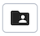

Import/Export Data Dialog¶
Use the Import/Export data dialog to copy data from a table to a file, or copy data from a file into a table.
The Import/Export data dialog organizes the import/export of data through the General, Options and Columns tabs.
Use the fields in the General tab to specify import and export preferences:
Move the Import/Export switch to the Import position to specify that the server should import data to a table from a file. The default is Import.
Enter the name of the source or target file in the Filename field. Optionally, select the Browser icon (ellipsis) to the right to navigate into a directory and select a file.
Use the drop-down listbox in the Format field to specify the file type. Select:
binary for a .bin file.
csv for a .csv file.
text for a .txt file.
Use the drop-down listbox in the Encoding field to specify the type of character encoding.
Use the fields in the Options tab to specify additional information:
Move the OID switch to the Yes position to include the OID column. The OID is a system-assigned value that may not be modified. The default is No.
Move the Header switch to the Yes position to include the table header with the data rows. If you include the table header, the first row of the file will contain the column names.
If you are exporting data, specify the delimiter that will separate the columns within the target file in the Delimiter field. The separating character can be a colon, semicolon, a vertical bar, or a tab.
Specify a quoting character used in the Quote field. Quoting can be applied to string columns only (i.e. numeric columns will not be quoted) or all columns regardless of data type. The character used for quoting can be a single quote or a double quote.
Specify a character that should appear before a data character that matches the QUOTE value in the Escape field.
Use the NULL Strings field to specify a string that will represent a null value within the source or target file.
Click the Columns tab to continue.
Use the fields in the Columns tab to select the columns that will be imported or exported:
Click inside the Columns to export/import field to deselect one or more columns from the drop-down listbox. To delete a selection, click the x to the left of the column name. Click an empty spot inside the field to access the drop-down list.
If enabled, click inside the NOT NULL columns field to select one or more columns that will not be checked for a NULL value. To delete a column, click the x to the left of the column name.
After completing the Import/Export data dialog, click the OK button to perform the import or export. pgAdmin will inform you when the background process completes:
Use the Stop Process button to stop the Import/Export process.
Use the Click here for details link on the notification to open the Process Watcher and review detailed information about the execution of the command that performed the import or export:
备注
If you are running pgAdmin in Server Mode you can click on the  icon in the process watcher window to open the file location in the Storage Manager. You can use the Storage Manager to download the backup file on the client machine .